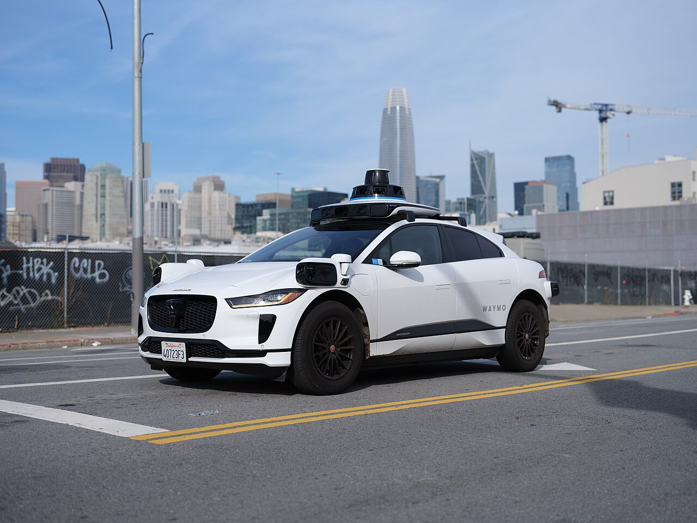

Draft for review — summarised from session notes; not yet checked with the speakers.


The Tech & AI track at Oxford took three short provocations and pointed them at one question: is AI simply making firms faster at what they already do, or is it changing the rules of competition itself?
Restructuring, not just acceleration
General-purpose technologies usually take decades to pay off, because firms cannot simply plug them in; they have to reorganise, build capabilities and restructure how they work. The first talk argued that AI may not wait. It can improve on its own, and AI firms can integrate forward into work their customers used to do themselves.
That raises three questions. Does AI restructure competition — changing which capabilities matter, which assets are defensible and which business models survive — rather than just accelerating it? If so, who wins, when more users mean more data, better models and more users again, potentially across many markets at once? And could that produce a small number of “super firms”? The counter-view was that every general-purpose technology so far, the internet included, also spawned new entrepreneurial ecosystems. Choices made by firms, governments and researchers in the next five years will shape which way it goes.
When AI enters the physical world
The second talk moved from software to hardware. Robots, autonomous vehicles and drones are advancing quickly now that software AI can solve problems that used to be tackled mechanically. Physical AI is strategically different: firms must deal with regulators and the public as well as rivals, and because their actions are visible and consequential, they spill over into other firms’ strategies.
The example came from autonomous vehicles. In 2018, when cameras and LiDAR were competing to become the standard way for a car to perceive the road, fatal incidents involving each technology occurred within days of one another. Afterwards, competitors invested more in sensor fusion, combining the rival technologies. One firm’s failure redirected an industry’s innovation trajectory.
Digital twins
The third talk set out three kinds of digital twin as a research agenda. Physical twins — live digital replicas of factories, hospitals or plants — can outperform manual operation, largely by responding to anomalies faster. Personal twins are AI agents that represent one individual: in one case, employees could not tell a chief executive from a bot built to stand in for him. That challenges two assumptions of human-capital theory: that human capital cannot be separated from the person, and that the person always owns it. And organisational twins, which simulate employees, suppliers and competitors, could let firms test strategic changes before making them.